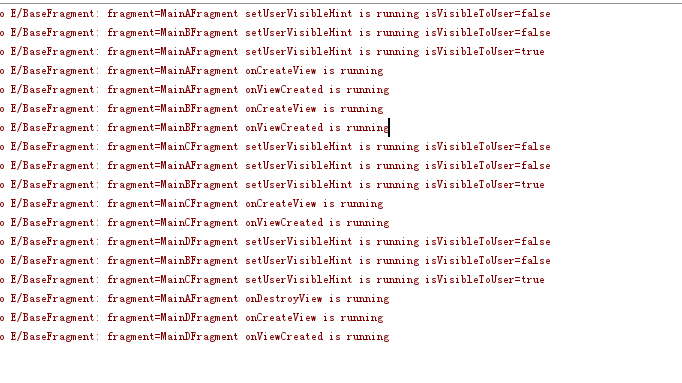

懒加载，意味着只有在页面可见的时候才加载数据，这种情况在使用viewpager的时候经常遇到，
因为viewpager会缓存下个页面，即会调用下个页面的setUserVisibleHint，onCreateView和onViewCreated，
所以我们可以根据页面的setUserVisibleHint是否可见来处理是否加载数据，封装之后，代码如下：1
2
3
4
5
6
7
8
9
10
11
12
13
14
15
16
17
18
19
20
21
22
23
24
25
26
27
28
29
30
31
32
33
34
35
36
37
38
39
40
41
42
43
44
45
46
47
48
49
50
51
52
53
54
55
56
57
58
59
60
61
62
63
64
65
66
67
68
69
70
71
72
73
74
75
76
77
78
79
80
81
82
83
84
85
86
87
88
89
90
91
92
93
94
95
96
97
98
99
100
101
102
103
104
105
106
107
108
109
110
111
112
113
114
115
116
117
118
119
120
121
122
123
124
125
126
127
128
129
130
131
132
133
134
135
136
137
138
139
140
141
142
143
144
145
146
147
148
149
150
151
152
153
154
155
156
157
158
159
160
161
162
163
164
165
166
167
168
169
170
171
172
173
174
175
176
177
178
179
180
181
182
183public abstract class BaseFragment extends Fragment {
private final String TAG = BaseFragment.class.getSimpleName();
protected FragmentActivity mActivity;
/**
* 将整个页面缓存，fragment在切换的时候，不需要重新创建页面
*/
protected View mRootView;
/**
*页面切换时候，是否重新加载数据
*/
private boolean isReLoadData = true;
/**
*页面切换时候，是否重新设置页面
*/
private boolean isResetView = true;
/**
* 是否对用户可见
*/
private boolean mIsVisible;
/**
* 是否完成创建
* 当执行完onViewCreated方法后即为true
*/
private boolean mIsPrepare;
@Override
public void onAttach(Context context)
{
super.onAttach(context);
Log.e(TAG,"fragment=" + this.getClass().getSimpleName() + " onAttach is running");
mActivity = (FragmentActivity) context;
}
@Nullable
@Override
public View onCreateView(LayoutInflater inflater, @Nullable ViewGroup container, @Nullable Bundle savedInstanceState)
{
Log.e(TAG,"fragment=" + this.getClass().getSimpleName() +" onCreateView is running");
if(!isHoldView() || mRootView == null)
{
mRootView = inflater.inflate(getLayoutId(), container, false);
}
return mRootView;
}
@Override
public void onViewCreated(View view, @Nullable Bundle savedInstanceState)
{
super.onViewCreated(view, savedInstanceState);
Log.e(TAG,"fragment=" + this.getClass().getSimpleName() +" onViewCreated is running");
if(isResetView)
{
isResetView = initView(view);
}
onViewInitFinished();
if (isLazyLoad()) {
mIsPrepare = true;
onLazyLoad();
} else {
canLoadData();
}
}
@Override
public void setUserVisibleHint(boolean isVisibleToUser) {
super.setUserVisibleHint(isVisibleToUser);
Log.e(TAG,"fragment=" + this.getClass().getSimpleName() +" setUserVisibleHint is running" + " isVisibleToUser=" + isVisibleToUser);
if (getUserVisibleHint()) {
mIsVisible = true;
onVisible();
} else {
mIsVisible = false;
onInvisible();
}
}
@Override
public void onDestroyView()
{
super.onDestroyView();
Log.e(TAG,"fragment=" + this.getClass().getSimpleName() +" onDestroyView is running");
mIsPrepare = false;
}
@Override
public void onDestroy()
{
super.onDestroy();
Log.e(TAG,"fragment=" + this.getClass().getSimpleName() +" onDestroy is running");
if(mRootView!=null)
mRootView=null;
}
/**
* 页面layout
*
* @return
*/
protected abstract int getLayoutId();
private void onLazyLoad() {
if (mIsVisible && mIsPrepare) {
//是否需要重新加载数据
canLoadData();
}
}
private void canLoadData()
{
//是否需要重新加载数据
if(isReLoadData)
{
isReLoadData = loadData();
}
}
/**
* 是否缓存整个页面
*
* @return
*/
protected boolean isHoldView()
{
return false;
}
/**
* 是否懒加载
*
* @return the boolean
*/
protected boolean isLazyLoad()
{
return false;
}
/**
* 用户可见时执行的操作
*/
protected void onVisible() {
onLazyLoad();
}
/**
* 用户不可见执行
*/
protected void onInvisible() {
}
/**
* 页面初始化完成
*/
protected void onViewInitFinished()
{
}
/**
*
* @param view
* @return true-页面可见时候每次都会设置页面，false-页面可见时，只设置一次数据
*/
protected boolean initView(View view)
{
Log.e(TAG,"fragment=" + this.getClass().getSimpleName() +" initView is running");
return true;
}
/**
* 页面切换时候，是否重新加载数据
* @return true-页面可见时候每次都会加载数据，false-页面可见时，只加载一次数据
*/
protected boolean loadData() {
Log.e(TAG,"fragment=" + this.getClass().getSimpleName() +" initData is running");
return true;
}
}
在viewpager有四个fragment的时候，通过A-B-C 3个fragment的切换顺序，跟踪log，如下：

可以看到viewpager会将当前页面的相邻两个页面一起create（它们不可见），不相邻的页面destroy，
注意：这时候调用的是onDestroyView(),而不是onDestroy()。
使用
继承该类，重写需要的函数
getLayoutId() 返回页面的layout
是否缓存整个页面:fragment在切换的时候，不需要重新创建页面1
2
3
4protected boolean isHoldView()
{
return false;
}
是否懒加载:只有在页面可见的时候才加载数据1
2
3
4protected boolean isLazyLoad()
{
return false;
}
页面初始化：返回值true-页面可见时候每次都会设置页面，返回值false-页面可见时，只设置一次数据1
2
3
4protected boolean initView(View view)
{
return true;
}
页面初始化完成:有些时候，需要在页面初始化完成后处理一些逻辑1
2
3
4protected void onViewInitFinished()
{
}
页面切换时候，是否重新加载数据:
true-页面可见时候每次都会加载数据，false-页面可见时，只加载一次数据1
2
3protected boolean loadData() {
return true;
}